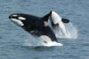
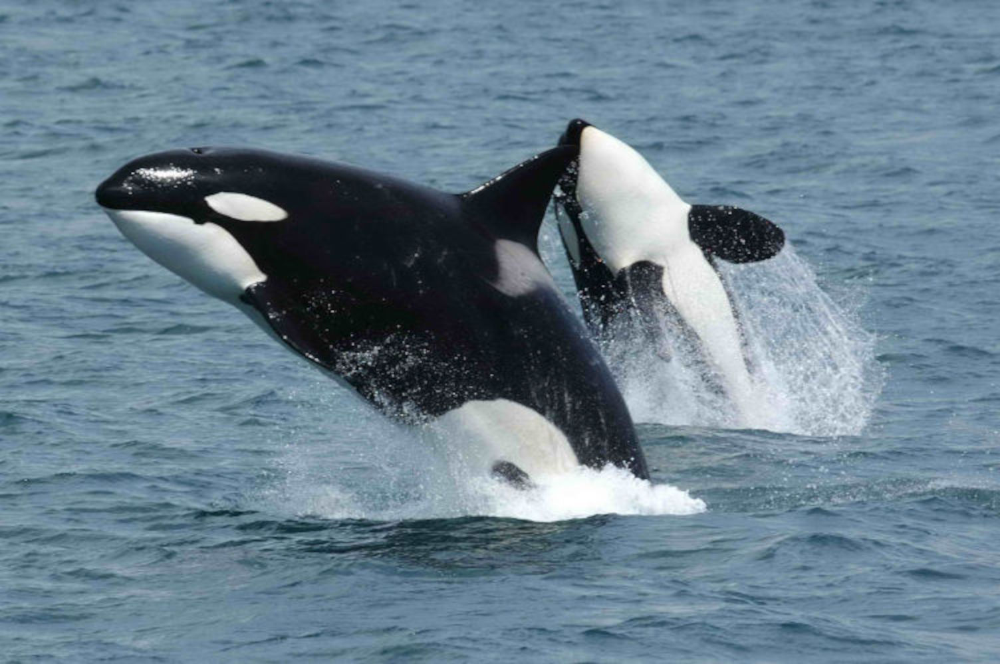

Jag laddade ner en högupplöst originalbild på mitt djur (minst 2000x1000 pixlar). För att minska filstorleken använde jag programmet GIMP. Jag ändrade måtten under Bild → Skala bild och exporterade sedan bilderna i formatet JPEG via Arkiv → Exportera som.
Filformat: JPEG | Filstorlek: [skriv in t.ex. 5 KB]

Filformat: JPEG | Filstorlek: [skriv in t.ex. 40 KB]
Filformat: JPEG | Filstorlek: [skriv in t.ex. 210 KB]
